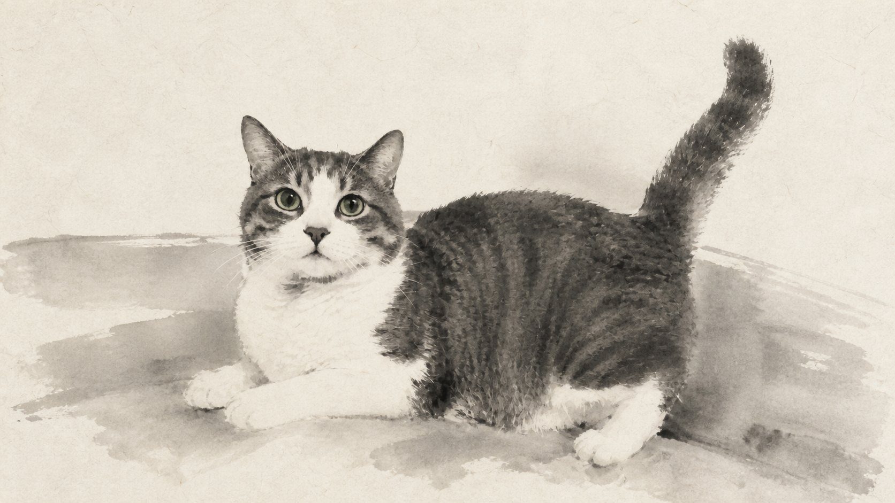

技法 · 作者 · 为何动人03 / 04
02
照片说“发生过”，
水墨说“被记住”
8 张照片 · 逐帧合成 · 原创声音


每秒 8 个离散状态、每状态保持 3 帧，再输出为 24 fps。渗化边缘让背景退场，轻微顿挫把四年拆成舍不得翻过的停留。
事实：本作由“每日艺术”基于私人家庭影像制作，保留主体数量、年龄、花纹、姿态、视线、接触关系与主要空间尺度。
我的观看：成长不是离开家，而是重新改写家中每件物品的比例。
每日艺术技术退到生活之后

手掌、拖鞋、床、椅子与门框轮流成为参照物。同类空间、不同占比，让“长大”在没有日期的情况下依然清晰。
暖纸白 #E9E1D2、烟灰 #8D877D、浓墨 #2A2926 构成低饱和近似色。光被压成柔软灰阶，最深的墨只留给眼睛、耳缘与交叠轮廓。
每秒 8 个离散状态、每状态保持 3 帧，再输出为 24 fps。渗化边缘让背景退场，轻微顿挫把四年拆成舍不得翻过的停留。
事实：本作由“每日艺术”基于私人家庭影像制作，保留主体数量、年龄、花纹、姿态、视线、接触关系与主要空间尺度。
《家，长成了他的形状》，每日艺术，2026，三分钟水墨定格影像。图像：成片代表性画面母版；作品来自私人档案，无公开下载地址，故按“无法下载则截图并注明”处理。未经许可请勿转载或公开发布。图片版权归原作者及相关权利人；赏析为“每日艺术”原创分析。